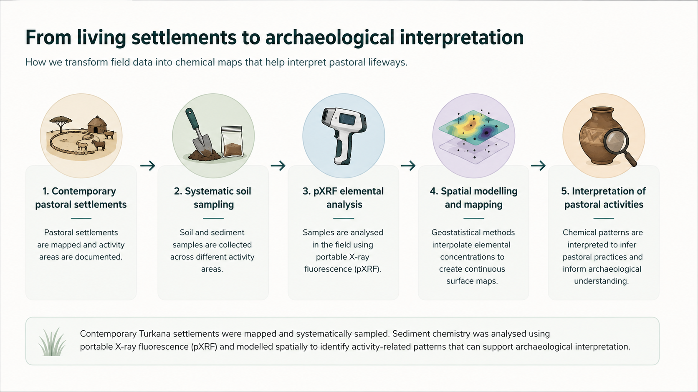

Living with uncertainty
Pastoralism is a successful strategy for inhabiting drylands, where people adapt to variable resources through mobility and flexible herd management.
CAMP - Loreamatet, Turkana
Interactive exploration of interpolated chemical surfaces and settlement structures.
Geo-ethnoarchaeology and soil chemistry
Pastoral settlements often leave subtle and short-lived traces. This visualization explores how soil chemistry can help reveal activity areas in contemporary Turkana pastoral settlements and support archaeological interpretation.
Pastoralism is a successful strategy for inhabiting drylands, where people adapt to variable resources through mobility and flexible herd management.
Pastoral societies have sustained livelihoods for millennia across arid regions, offering important insights into human adaptation under environmental stress.
Pastoral settlements are often temporary and leave subtle material traces, making their long-term history difficult to reconstruct archaeologically.
How can archaeologists identify and interpret settlements that often leave only ephemeral traces?
CAMP (Reconstructing the Archaeology of Mobile Pastoralism) addresses this challenge by developing geo-ethnoarchaeological methods that combine archaeology, ethnography, geochemistry and geostatistics to investigate pastoral settlement dynamics in drylands.
The CAMP project investigates how pastoral activities modify soils and sediments. By studying contemporary settlements, chemical signatures can be identified and used as reference models for interpreting archaeological pastoral sites.
Explore whether elemental patterns correspond to settlement practices.
Compare corrals, domestic spaces and other activity zones.
Use present-day reference patterns to support archaeological reasoning.

Examine the spatial distribution of studied settlements within the landscape.
Inspect individual settlements, activity areas and elemental distributions.
Compare chemical patterns between settlements and activity areas.
Turkana County, in northwestern Kenya, is one of the most arid regions of East Africa and has a long history of mobile pastoralism. For centuries, Turkana communities have relied on livestock herding as a flexible strategy for coping with environmental variability, seasonal resource availability and recurrent droughts. This long-term adaptation makes the region an ideal setting for investigating how pastoral activities shape landscapes and leave material traces in the archaeological record.
This visualization presents data from ten contemporary pastoral settlements documented in the Loreamatet area within the CAMP project. The objective is to identify reference patterns that can provide a framework for interpreting archaeological pastoral sites and exploring the long-term dynamics of pastoral lifeways in dryland environments.
Selected context
GeoTIFF raster + GeoJSON structures
GeoTIFF raster + GeoJSON structures
GeoTIFF raster + GeoJSON structures